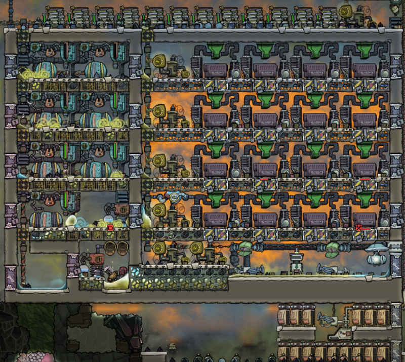
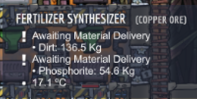
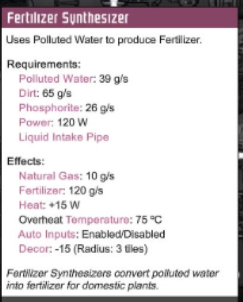
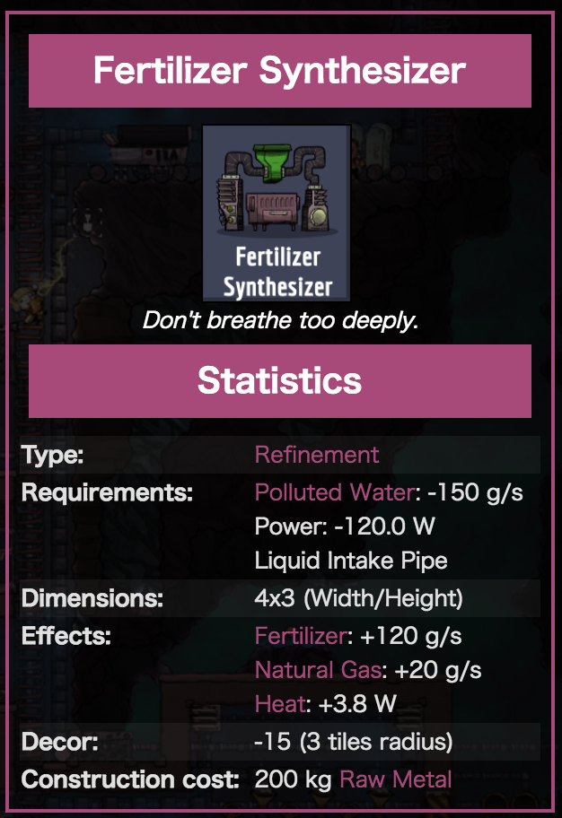

Cosmic Upgrade: End Of Natural Gas Generator + Fertilizer Synthesizer
Cosmic Upgrade: End Of Natural Gas Generator + Fertilizer Synthesizer
I was tinkering with my Natural Gas Generator + Fertilizer Synthesizer power plant. I came to the following schematics and was going to add valves to optimize the flow of gas and liquids.

Then Cosmic Upgrade came
Something was wrong. My fertilizer far was no longer working. I checked, and this is what I got:

What?! Fertilizer Synthesizers requires Dirt and Phosphorite?! No Way.

Then I checked the wiki page, and I see that it used to only require Polluted Water, as I expected.

Well, so much of that. It also generates way more heat than it used to.
The setup was great because once primed, it really only needed water as its external source to generate a huge amount of electricity, but with this, now we need to have busy duplicants, and that’s not really a great way to do it. Sigh.
[Update]: Yep, the release notes clearly show that they thought using Natural Gas to generate this much energy was not right.